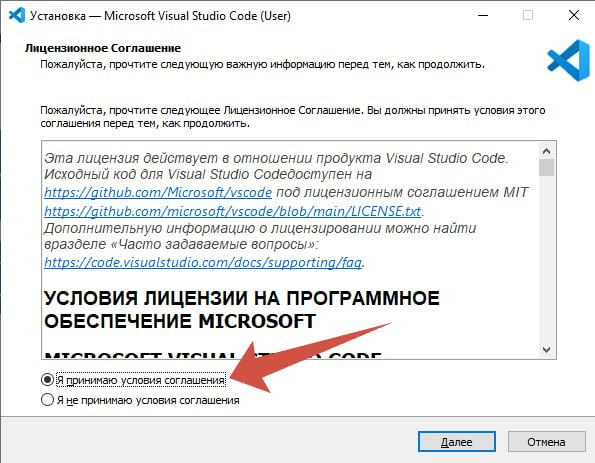
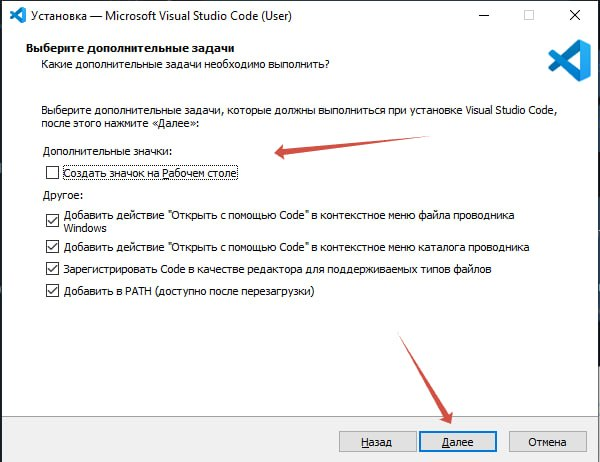
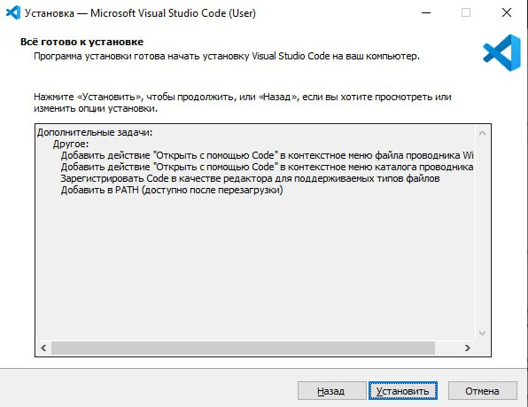
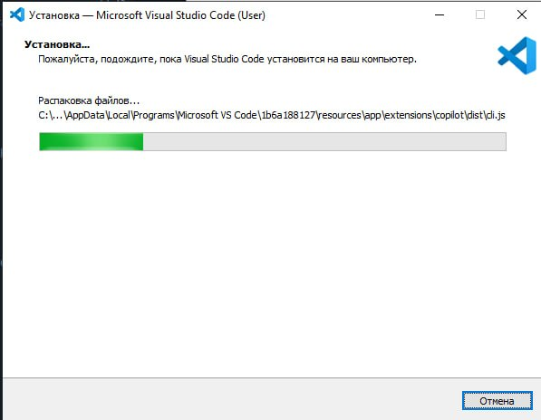

Инструкция по установке Python
Это руководство поможет вам установить последнюю стабильную версию Python 3 на ваш компьютер. Мы выбираем Python 3, так как он необходим для работы с такими популярными библиотеками, как Tkinter, Pygame, MCPI Minecraft и MinecraftStuff. Следуйте шагам внимательно.
Шаг 1: Перейдите на официальный сайт Python
Откройте ваш браузер (Google Chrome, Firefox, Edge и т.д.) и перейдите на официальный сайт Python по ссылке: https://www.python.org

Шаг 2: Скачайте установщик
На главной странице наведите курсор на меню "Downloads" (Загрузки). Должна появиться кнопка для скачивания последней версии Python для Windows. Нажмите на нее, чтобы начать скачивание.

Шаг 3: Запустите установщик
После того, как файл скачается, найдите его в папке "Загрузки" вашего компьютера и дважды кликните по нему, чтобы запустить.


После того как поставили галочку, нажмите "Install Now" (Установить сейчас).

Шаг 4: Процесс установки
Установщик начнет копировать файлы. Просто дождитесь окончания процесса.

Шаг 5: Завершение установки
После успешной установки вы увидите окно с сообщением "Setup was successful". Нажмите "Close" (Закрыть).

Шаг 6: Проверка установки
Теперь давайте проверим, правильно ли установился Python. Для этого:
- Нажмите на меню "Пуск" или значок поиска на панели задач.
- Начните печатать
cmdили "Командная строка" и откройте приложение. - В появившемся черном окне введите команду
python --versionи нажмите Enter.
Если вы видите что-то вроде Python 3.x.x (где x - цифры), значит все установлено правильно!

python --version и успешным ответом, показывающим версию Python.
Инструкция по установке VS Code
Visual Studio Code (VS Code) — это мощный и популярный редактор кода, который мы будем использовать для написания программ на Python.
Шаг 1: Скачайте VS Code
Перейдите на официальный сайт Visual Studio Code по ссылке: https://code.visualstudio.com/. Нажмите на большую синюю кнопку, чтобы скачать версию для Windows.


Шаг 2: Запустите установщик и примите соглашение
Запустите скачанный файл. В первом окне примите условия лицензионного соглашения и нажмите "Далее".

Шаг 3: Выбор дополнительных задач
В окне "Выбор дополнительных задач" рекомендуется отметить следующие пункты для удобства работы:
- Создать значок на рабочем столе
- Добавить действие "Открыть с помощью Code" в контекстное меню проводника Windows для файлов
- Добавить действие "Открыть с помощью Code" в контекстное меню проводника Windows для каталогов

Шаг 4: Установка и завершение
Нажмите "Далее", а затем "Установить". Дождитесь окончания установки и нажмите "Завершить". VS Code запустится автоматически.


Шаг 5: Установка расширения Python
Это самый важный шаг для работы с Python в VS Code.
- В левой панели VS Code найдите и нажмите на иконку "Расширения" (выглядит как несколько квадратиков).
- В строке поиска введите Python.
- Найдите расширение от Microsoft (оно будет первым в списке) и нажмите кнопку "Установить".
После установки этого расширения VS Code будет полностью готов к работе с вашими Python-проектами.
Поздравляем!
Теперь у вас есть все необходимые инструменты для начала программирования на Python!